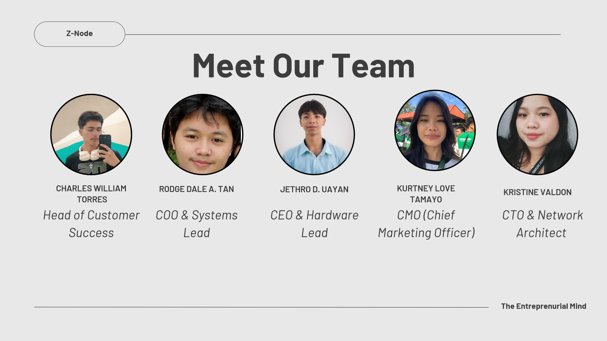

Attendance That Works When the Internet Doesn't.
Bridging the digital divide for state universities and rural colleges. Secure, contactless, and compliant palm vein scanning—no connection required.

The Trust Deficit in Rural Data
Transitioning from easily manipulated paper logs to immutable, offline-first palm vein data truth.
The Old Way
- description Paper Logs: Vulnerable to damage, loss, and 'buddy punching'.
- cloud_off Cloud Dependency: Standard systems fail when the connection drops in low-bandwidth environments.
- timer Time Consuming: Administrative burden of manually verifying attendance.
The Bio-Relay Value
-
Highly Secure Identity: Immutable identity verification using unique palm vein patterns that is hygienic and completely contactless.
- sd_storage Works Fully Offline: Stores logs locally and saves massive amounts of time when aggregating data.
- verified_user Compliant & Secure: Meets strict data privacy standards for state universities and training centers.
The Bio-Relay Hardware
Built from the ground up for tough environments. Resilient components and self-sustaining power networks designed for remote, low-bandwidth campus locations.
The Node Device
The classroom endpoint. Features highly accurate palm vein scanning built into a durable, tamper-resistant casing designed to withstand heavy daily use.
Network Architecture
Nodes communicate via a resilient star topology. Even if one classroom node goes offline, the rest of the campus network continues to relay data perfectly.
The Main Tower
The central synchronization hub. Collects offline data bursts from all classroom nodes and processes them for secure campus-wide database integration.
Instant Digital Reports
We don't just collect data; we make it actionable. For ₱12,500 annually per college, our software transforms raw palm vein logs into structured, compliant reports the moment a connection is established.
- check Integrates with the University Registrar for official student lists.
- check Automatically adheres to specific university attendance rules.
- check Generates DepEd and CHED ready documents instantly.
Trusted by Central Mindanao University
A successful deployment requires institution-wide cooperation. We are proud to partner with key CMU departments to bring the Bio-Relay Node to life.
Ensuring secure database integration across campus networks.
Providing official student lists and validating attendance rules.
Ensuring student trust, transparency, and biometric data privacy.
Pilot testing the devices in active, offline classroom settings.
Providing strategic approval to mount the main LoRaWAN campus relay tower.
Meet The Minds Behind Z-Node
A dedicated group of innovators working to bring reliable, offline-first palm vein scanning solutions to rural education. From hardware engineering to customer success, we are building the foundation of trust in rural data.
